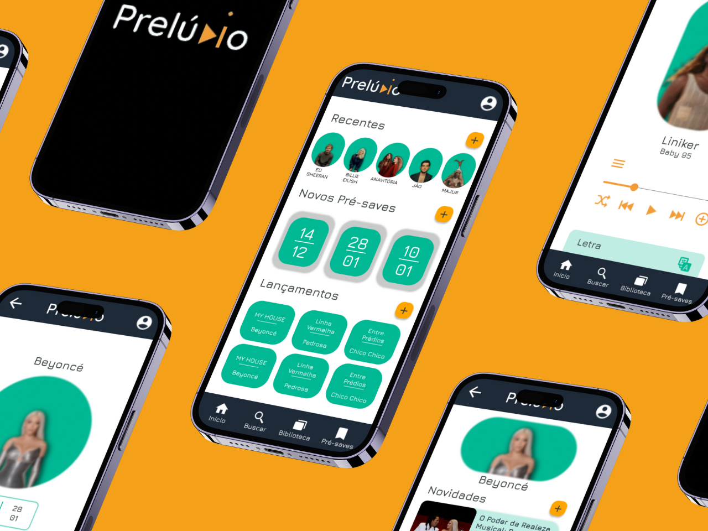

Meus Projetos
Prelúdio
Dê as boas-vindas a uma nova era na experiência musical com o Prelúdio, um aplicativo revolucionário que redefine a forma como você descobre, aprecia e se conecta com sua música favorita antes mesmo de ela ser lançada oficialmente. O Prelúdio não é apenas um aplicativo de pré-save comum; é um palco vibrante onde a música ganha vida antes do aplauso, oferecendo uma experiência incomparável para os verdadeiros aficionados por música.
